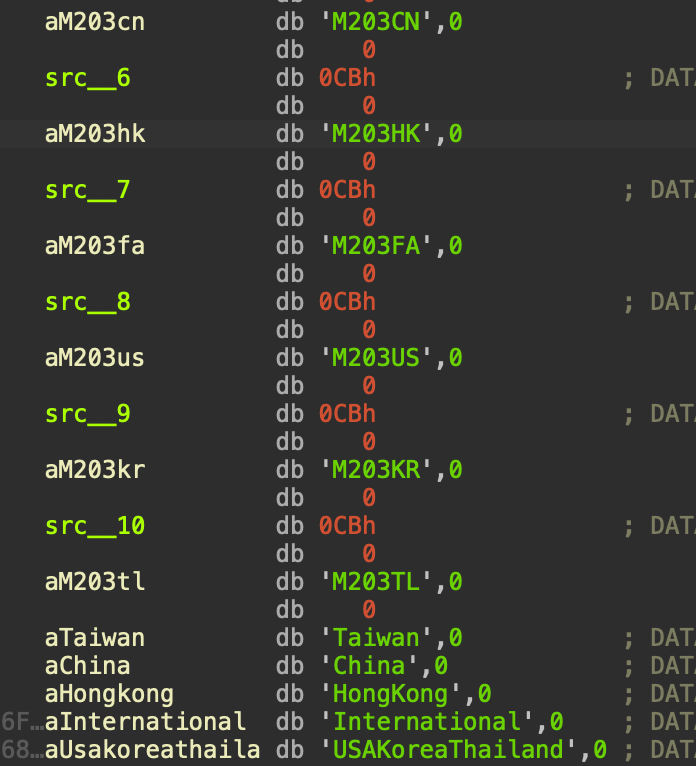
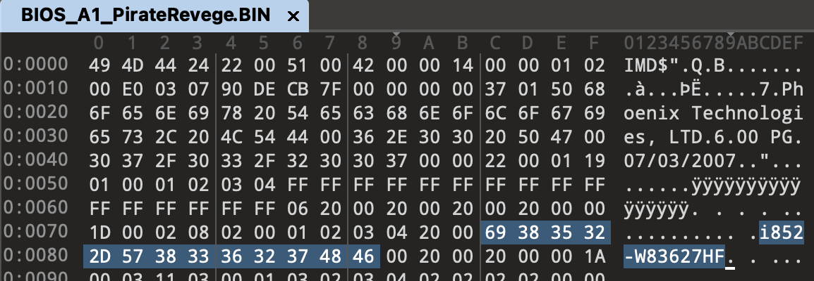

嵌入式架构分析
IGS的反盗版技术上不难，但是非常诡异，可能是代码写的太烂了。
IGS E2000 本质上，是 PC + 游戏基板 的组合（研华设计）。既要考虑到 Anti-Copy （反盗版），又需要考虑到软件工程上的复用。ASIC相当于一个完全黑盒的计算模块，将游戏关键逻辑放在里面，既能提升性能，也可以防止破解。

主程序流程分析
游戏主程序会开辟一段 0x200034的栈空间，其中缓冲区占0x200000，而且这个栈开辟出来后不会恢复，这会导致IDA Pro无法反编译，不知道是不是故意的。

首先需要patch这个缓冲区大小，减小函数的栈帧，然后将函数 undefine，最后重新识别，就可以成功反编译。

- Kernel mount_root 时，以及游戏程序启动时 会校验 BIOS 版本信息，开发者却说是获取CRC结果，结果我愣是找遍了所有CRC的位置，也没找到任何反盗版有关的CRC计算逻辑；
- BIOS 信息校验失败就校验PCI的驱动信息，如果失败，好像也没有任何操作，但其他地方也插入了许多一样的校验桩，校验失败就会阻止运行；
- 系统初始化：屏幕、音频、图形、文字、语言、ASIC、Timer、PLXPCI、游戏、音乐、控制器、摄像机、台账、控制、投币、混合器等等；
- 刷新4次ASIC，why???；
- 加载基础 action 文件（TSGROM格式），每次加载都刷新一次ASIC；
- 游戏版本校验，显示第一屏，加载字体，加载声音；
- 加载读卡器；
- 游戏Loop，4种状态(Game, Test, Setting, Demo)，可通过ASIC控制

游戏使用了SDL 1.2.7开发，SDL（Simple DirectMedia Layer）是一个跨平台的多媒体开发库，主要用于提供对音频、输入设备（键盘/鼠标/游戏手柄）和图形硬件的底层访问。但是这个性能比较低，只适合2D游戏。Percussion Master 2008 是2D游戏。Speed Driver 2 是 3D游戏，两者的差别可能很大。
开发者在游戏主程序每一处与 ASIC 交互的位置，都插了代码桩，暂时把他称作 RealTimeEvent，应该是统一事件处理程序，每次逻辑的变化、动画的变化，都需要刷新事件。用来实现各种复杂的控制功能，也附带了一些反盗版功能。不得不吐槽，这个代码质量真糟糕，每次都要做大量的计算，性能很差，和用纯 js + html 开发单页面应用一样。
状态检查桩的逻辑
- 更新时钟
- 计时器检查
- Action处理
- 音乐处理
- 音频处理
- 按键状态以及控制输入
- 台账
- 游戏币处理
- PLX PCI 状态处理
- SDL 事件处理
- 绘制动态五边形动画
- PCI 控制写入
- ASIC 27 命令写入
- PCI 数据读取
- 图形刷新
区域初始化
percussion master 2008 支持7个地区，3种语言；简体中文、繁体中文、英文。

ROIO BIOS 信息校验
内核会运行一个驱动 /dev/roio, 游戏程序通过此驱动对比内置的版本信息表，实现校验功能。内核本身和游戏程序均内置了表格，原理应该是开发者通过某些工具解析了BIOS信息，然后将物理偏移硬编码到程序和内核里面。

内核和主程序的 BIOS 信息表结构有些区别，Kernel的4字节对齐，但使用原理都是一样的。
Game BIOS table
struct bios_item {
unsigned int index; // index
unsigned char table_cmp_max_count;
unsigned int value_addr; // base addr 0xC0000000
unsigned char char_cmp_max_count;
unsigned int name_addr;
}
Kernel BIOS table
struct bios_item {
unsigned int index; // index
unsigned int table_cmp_max_count;
unsigned int value_addr; // base addr 0xC0000000
unsigned int char_cmp_max_count;
unsigned int name_addr;
}
对比的逻辑也很简单，
第一步通过遍历程序内置的 BIOS Table，获取版本字符串地址、目标字符串物理地址、遍历轮数等。 第二步，通过 IOCTL Call /dev/roio， 对比System ROM 区域指定偏移和程序内置的对应字符串，只要有一个字符相等就通过，太蠢了。
该内核只允许运行在4种主板，但是游戏允许运行在更多的设备，因此需要校验主程序、内核、主板是否匹配。这是反盗版的机制，直接patch掉就行了。
经过统计，地址和版本字符串如下，所有地址都是0x0f0000起始。
# Kernel + Game
0x0F086E i852-W83627HF
0x0FEC7C i852-W83627HF
0x0FEC8A 6A69YILTC-00
0x0FECDE Ph6A69YILT
# Game
0x0FE0C1 L4S5MG3
0x0FEC84 6A6IXE19C-00
0x0FECDF I6A6IXE19
0x0FE0C1 L4S5MG/651+
0x0F006D nVidia-nForce
0x0FECDE Ph6A61BPA9
0x0FEC8A 6A61B_00C-00
0x0FECDE Ph6A61B_00
接下来分析ROIO驱动，大部分代码都插了 Anti-Copy 暗桩，使用XOR，对性能影响最小，可以防止游戏A程序放到游戏B的系统运行。
- 输入参数 mask 0x1FB8408E
- 返回值 mask 0xC2E83AB8

ROIO 的 Magic Number 有三种：
- 0xfc 获取目标地址的32位数值，小端
- 0xfd 获取目标地址的32位数值，大端
- 0xfe 获取目标地址的8位数值
最后再 xor 0xC2E83AB8

这里的data作为偏移，基址是0xc0000000，然后加上BIOS信息的值，是因为x86打开了paging，因此CPU访问内存需要走虚拟地址。Linux i386 对于虚拟地址偏移的设定如下
#define __PAGE_OFFSET (0xC0000000)
#define __pa(x) ((unsigned long) (x) - PAGE_OFFSET)
#define __va(x) ((void *)((unsigned long) (x) + PAGE_OFFSET))
通过IOMEM的map，也可以看到BIOS信息的地址位于 System ROM
# cat /proc/iomem
00000000-0009fbff : System RAM
0009fc00-0009ffff : reserved
000a0000-000bffff : Video RAM area
000c0000-000c7fff : Video ROM
000f0000-000fffff : System ROM
00100000-1feeffff : System RAM
00100000-0050aab5 : Kernel code
0050aab6-006f8f27 : Kernel data
1fef0000-1fefffff : reserved
1ff00000-1ff003ff : Intel Corp. 82801DB Ultra ATA Storage Controller
d0000000-dfffffff : PCI Bus #01
d0000000-dfffffff : PCI device 10de:0221 (nVidia Corporation)
e0000000-e7ffffff : Intel Corp. 82852/855GM Host Bridge
e8000000-eaffffff : PCI Bus #01
e8000000-e8ffffff : PCI device 10de:0221 (nVidia Corporation)
e8000000-e8ffffff : nvidia
e9000000-e9ffffff : PCI device 10de:0221 (nVidia Corporation)
eb000000-eb01ffff : PLX Technology, Inc. PCI <-> IOBus Bridge Hot Swap
eb020000-eb02007f : PLX Technology, Inc. PCI <-> IOBus Bridge Hot Swap
eb021000-eb0213ff : PLX Technology, Inc. PCI <-> IOBus Bridge Hot Swap
eb022000-eb022fff : Intel Corp. 82801BD PRO/100 VE (CNR) Ethernet Controller
eb022000-eb022fff : e100
eb100000-eb1003ff : Intel Corp. 82801DB USB2
eb100000-eb1003ff : ehci_hcd
eb101000-eb1011ff : Intel Corp. 82801DB AC'97 Audio Controller
eb101000-eb1011ff : Intel 82801DB-ICH4
eb102000-eb1020ff : Intel Corp. 82801DB AC'97 Audio Controller
eb102000-eb1020ff : Intel 82801DB-ICH4
fec00000-ffffffff : reserved
BIOS芯片封装是PLCC 32，使用RT809H成功dump。

使用系统启动后，BIOS ROM的一些数据被解析到了内存里，不是1:1 copy，偏移地址是 0xF0000，。

PCCard 随机数校验
我实在不理解这个代码的目的是什么，驱动代码里有SPY的关键词，可能是反嗅探用的暗桩？在启动程序、初始化游戏和print日志会触发，如果上面的BIOS Check 失败了，也会触发此校验。通过ioctl来请求/dev/pccard0，获取结果或者不获取结果。

request 0 列表，用于对比结果。列表有4个成员，对应相关偏移。从四个里随机选一个，并带上随机数，随机值区间 [17, 768]，本地计算后，发到驱动执行一下，然后发回来，实际上PCI没有真正参与。
0x64 基址：0xC8000000 设置 SPY_FLAG spy_fixec_func
0x6e 基址：0xD0000000 设置 SPY_FLAG spy_quit_func
0x96 基址：0xA8000000 设置 SPY_FLAG
0xa0 基址：0xB0000000 设置 SPY_FLAG
request 1 列表，长度17
0xfe,0xc8,0xfd,0xa0,0x96,0x6e,0x64,0xdd,0xde,0xdf,0xe0,0xe1,0xe2,0xe3,0xe4,0xe5,0xe6
看[1,255]的值是否能命中列表的值，尝试5-30次，如果命中，尝试次数-1，然后再来一次。如果没命中，就通过ioctl来请求随机值对应的偏移（参数[17,768]），幻数就是命中的那个值。我感觉可能是用来初始化驱动的，实在想不到其他作用了。为什么写的那么复杂？

在游戏主程序的某处，发现了残留的代码，异或的内容是 0xD4AA268A，在 percussion master 2008 未发现触发逻辑，应该是另一个游戏的暗桩。可以更确定，这个功能就是为了反盗版的。（虽然设计的很烂）

ASIC 27 协议
A27 初始化
游戏主程序与I/O板的通信，经过 PLX PCI 9030 芯片，以共享内存的方式，进行数据交换。
游戏启动后，ASIC 27 初始化之前，会先加载PCI 9030驱动，并开辟一段缓冲区，专门用来存放 ASIC Buffer，里面有各种数据状态。开发者称作 CommandPort。

接下来初始化 ASIC 27，首先更新Checksum，将位于buffer的按键灵敏度、按键输入、灯光状态、system mode、buffersize累加得到数值checksum，然后放在buffer的两个位置。后续的每次ASIC 27 请求，都会重新计算 checksum。
首先写入0x2024字节到ASIC 27，cmd: 0xfe，也就是直接拷贝缓冲区数据到到共享内存。 然后ASIC处理后，刷新的共享内存，并且会将sm从0x1c改为其他值，代表处理结束。
ASIC会将游戏的配置信息，同步OS用于更新游戏配置，将会更新以下目录
./pm2_data/storename.dat
./pm2_data/soundset.bin
./pm2_data/gameset.bin
将sm设为0，同时再更新一次 checksum，发送到A27
System Mode
经过分析，以下模式
- 0x0: 默认模式
- 0x1: ASIC测试数据读取
- 0x2: 按键测试
- 0x3: 蜂鸣器测试
- 0x4: 灯光板测试
- 0x5: 投币测试
- 0x6: Trackball 测试
- 0x7: SelMode，IGS Logo
- 0x8: Teammark
- 0xc: Coin Page
- 0xf: option
- 0x14: Photo
- 0x10: Song Play
- 0x1a: CCD
- 0x1d: 调整音量
A27 System Mode Write 状态机
发送数据到ASIC之前的预处理，当 sm 为以下值，无处理逻辑，返回1
0x0,0x2,0x3,0x6,0x9,0xa,0xb,0x11,0x12,0x15,0x16,0x17,0x18,0x19,0x1b,0x1c,0x1e
- 0x1: 测试数据写入
- 0x4: 灯光测试
- 0x5: 投币测试
- 0x7: SelMode
- 0x8: Teammark
- 0xc: 代码已删除
- 0xe: 代码已删除
- 0xf: 代码已删除
- 0x10: Song
- 0x13: 代码已删除
- 0x14: 代码已删除
- 0x1a: 摄像机测试
- 0x1d: 调整音量
其他值则触发 Assert
A27 System Mode Analysis 状态机
ASIC 返回的数据，由游戏主程序处理，当 sm 为以下值，无处理逻辑，返回1
0x0,0x6,0x9,0xa,0xa,0xb,0x11,0x12,0x15,0x16,0x17,0x18,0x19,0x1b,0x1c,0x1d,0x1e
System Mode 对应的处理
- 0x1: ASIC测试数据读取
- 0x2: 进入按键测试
- 0x3: 进入蜂鸣器测试
- 0x4: 进入灯光板测试
- 0x5: 投币测试
- 0x7: 加载 IGS LOGO
- 0x8: 加载 Teammark 数据
- 0xC: 代码已删除
- 0xE: 代码已删除
- 0xF: 代码已删除
- 0x10: Song
- 0x13: 代码已删除
- 0x14: 代码已删除
- 0x1a: CCD 信息
其他值则触发 Assert
按键状态机
press
┌──────────────────────┐
│ │
┌────▼─────┐ release ┌──┴─────┐
│ Idle │────────────►│Released│
│ (0) │ │ (3) │
└────▲─────┘ └──▲─────┘
│ │
│ press │ release
│ │
┌────┴─────┐ long press ┌──┴─────┐
│ Pressed │────────────►│Holding │
│ (1) │ │ (2) │ keep holding, counter++
└──────────┘ └────────┘
Buffer 结构体分析
Buffer 的最大长度是 8192
Buffer 响应的 Header 格式如下
struct g_rBufferRead {
int _dwBufferSize; // 数据大小
int system_mode; // 系统模式
char coin_inserted; // 投币了
char a27_error_flag;
short error_number;
int key_io_list[6];
int8 key_channels;
char pc0;
char pc1;
int16 area_code;
int16 padding_1;
char in_rom_version_name[8];
char ext_rom_version_name[8];
int16 inet_password_data;
int16 a27_has_message; // 决定 a27_message 是否携带数据
char is_light_io_reset;
char pci_card_version;
char bCheckSum1;
char bCheckSum2;
char a27_message[40];
char asic27_buffer[unknown];
}
Buffer 请求的 Header 格式如下
struct g_rBufferWrite {
int _dwBufferSize; // 数据大小
int system_mode; // 系统模式
int key_input;
int16 trackball_data[4];
char bCheckSum1;
char bCheckSum2;
char lightdisable;
char key_sensitivity;
int lightstate;
int lightpattern;
char data[unknown];
}
A27 Response Checksum
ASIC 27 响应也会携带 Checksum，游戏主程序会验证。计算方式为以下数据的累加
a27_has_message + inet_password_data + rd_is_light_io_reset + error_number + asic27_error + coin_inserted + system_mode[0] + buffer_size
Buffer 混淆分析
Percussion Master 2008对比旧版本，增加了简易混淆，目的是反盗版，避免拷贝ROM直接运行。当从缓冲区拷贝到 ASIC 27 buffer时，数据就会被混淆处理。
混淆的前提条件是 System Mode 符合下列值才会触发，刚好这些 mode 的数据都没有被Write状态机预处理。
- 0x7: SelMode，IGS Logo
- 0x8: Teammark
- 0xc: Coin Page
- 0xd:
- 0xe:
- 0xf: Option
- 0x13:
- 0x14: Photo
- 0x15:
混淆阶段，程序把 asic27_buffer 的数据复制到 dest。用 dest 作为源，分块处理，每块大小是 0x500 = 1280 字节。取数据块，用块头 4 字节 + mask_table 计算扰动值，根据扰动值对块数据做循环重排，最终写回缓冲区。
v3 = mask_table[v1[0]];
v3 ^= mask_table[v1[1]];
v3 ^= mask_table[v1[2]];
v3 ^= mask_table[v1[3]];
用 v3 算一个偏移量，如果剩余数据不足 0x500，则 v3 % (剩余长度-4) + 4；否则固定 % 0x4FC + 4，保证偏移范围在 [4, 0x4FF]。
先把 [v3, end] 拷贝到目标，再把 [4, v3) 拷贝过去，最终得到一个“旋转过”的块，前 4 字节（header）本身不按顺序复制，而是被跳过+重新拼接。
让 AI 写了一个 python 的代码实现。
import random
# size: 0x400
mask_table = [0x00, 0x00, 0x00, 0x00, 0x39, 0x4E, 0xC1, 0xE6, 0x02, 0x19, 0xB1, 0xB9, 0x63, 0xCB, 0xC7, 0x9E, 0xE4, 0xCD, 0x76, 0xE7, 0x23, 0x8D, 0xB3, 0x6B, 0x3F, 0xDA, 0x89, 0xF5, 0x4D, 0xCB, 0x56, 0xB5, 0xD3, 0xA9, 0xBC, 0x2E, 0xA0, 0xE0, 0x80, 0xD6, 0x92, 0x62, 0xDE, 0xC9, 0xFD, 0x24, 0x04, 0x06, 0x4B, 0x70, 0xB2, 0x21, 0x26, 0xD1, 0xB1, 0xAF, 0xA0, 0x29, 0x29, 0x9D, 0x0C, 0x5E, 0x59, 0x09, 0xA2, 0xC9, 0xF3, 0x67, 0x4F, 0xE6, 0xCD, 0x6E, 0xF3, 0x97, 0xF1, 0xF9, 0xD1, 0xE1, 0xCD, 0x26, 0x62, 0x0D, 0xF4, 0x7A, 0x72, 0x98, 0x3C, 0x9B, 0xE2, 0x43, 0xCE, 0x54, 0xF4, 0x44, 0xE9, 0xF5, 0x22, 0xC4, 0x3F, 0xD0, 0x38, 0x5F, 0x96, 0xAD, 0x05, 0xB7, 0x18, 0x47, 0xFE, 0x00, 0x14, 0xED, 0x5B, 0x75, 0x3B, 0xF2, 0x08, 0xA2, 0x44, 0x1E, 0xE5, 0x59, 0x68, 0x4A, 0x36, 0x9E, 0xF6, 0x87, 0x74, 0xAA, 0x70, 0x68, 0x6A, 0x1B, 0xED, 0x84, 0xE9, 0xB2, 0x35, 0xC5, 0x54, 0x83, 0xE8, 0x5B, 0x05, 0xD9, 0x77, 0x9A, 0xD6, 0x20, 0xD9, 0x48, 0xA9, 0x59, 0x18, 0x40, 0xB1, 0x5A, 0x81, 0xC1, 0x96, 0x7B, 0xC7, 0x1F, 0xD5, 0x5A, 0xB1, 0x01, 0x9E, 0xA8, 0x67, 0x52, 0xF4, 0x7A, 0x39, 0x51, 0x80, 0x18, 0xC9, 0x61, 0xEE, 0x01, 0xEC, 0x19, 0x2F, 0x25, 0xBC, 0x74, 0x85, 0x6A, 0x99, 0x92, 0x6A, 0x28, 0x13, 0xF6, 0x9A, 0xED, 0x02, 0x26, 0xF4, 0x69, 0x9F, 0x1E, 0xED, 0xC3, 0x18, 0x0E, 0xBD, 0x32, 0x1F, 0x47, 0x4F, 0x55, 0x8B, 0x91, 0x75, 0xEC, 0x66, 0xC8, 0x83, 0xED, 0x2E, 0x1B, 0x0F, 0xB0, 0x65, 0xEC, 0x87, 0xD3, 0xE0, 0xE2, 0x2B, 0x16, 0xCB, 0x0A, 0x0F, 0x70, 0x64, 0x52, 0xBA, 0x38, 0x6B, 0x5C, 0xEA, 0xFD, 0xA9, 0xB1, 0x8D, 0x8F, 0x26, 0x4B, 0xD9, 0xD3, 0x40, 0x4A, 0x66, 0x33, 0xBB, 0x01, 0xCE, 0x3C, 0x3C, 0x56, 0x14, 0xAE, 0xFD, 0x05, 0x7A, 0x8F, 0x4D, 0x4D, 0x79, 0x29, 0xCC, 0x81, 0xCD, 0x07, 0x43, 0x68, 0x57, 0x0C, 0xDA, 0xDE, 0x79, 0x1D, 0xE0, 0x01, 0x8D, 0x91, 0x17, 0x55, 0x4F, 0xF8, 0x25, 0x60, 0xCE, 0x11, 0x34, 0x3F, 0x3F, 0x03, 0xA3, 0xEF, 0xFA, 0xF5, 0x13, 0xE5, 0xEA, 0x75, 0x6A, 0xD7, 0xE1, 0x65, 0x94, 0x90, 0x42, 0xC9, 0x1D, 0x7F, 0x66, 0xDB, 0x68, 0xB8, 0x18, 0x18, 0x8B, 0x22, 0x49, 0x70, 0x71, 0x88, 0x2D, 0xD9, 0x96, 0x29, 0x4B, 0xAC, 0x7F, 0x58, 0x50, 0x57, 0x0F, 0xDC, 0x4D, 0xB9, 0x53, 0x81, 0x65, 0xD9, 0xB7, 0x85, 0x10, 0xF0, 0xCE, 0x4B, 0x2B, 0xAA, 0x7F, 0x7C, 0x75, 0xBA, 0xB2, 0x01, 0x64, 0x13, 0x07, 0x0A, 0x5E, 0x3F, 0xEF, 0xFA, 0x00, 0x8B, 0x31, 0x89, 0x6A, 0xE9, 0x17, 0x81, 0xC1, 0x4D, 0xEE, 0x31, 0x8C, 0xF0, 0x3A, 0xFD, 0x77, 0x90, 0xDF, 0x7C, 0x83, 0xDF, 0xF9, 0x99, 0xE4, 0xC0, 0xE5, 0x82, 0x22, 0xBD, 0x46, 0xBC, 0xF8, 0x23, 0xE1, 0xDD, 0x48, 0xF3, 0xE1, 0xB0, 0x66, 0x13, 0x93, 0x85, 0xB8, 0xEC, 0x9B, 0xCE, 0x0C, 0xEA, 0xDD, 0x14, 0x42, 0xDF, 0x45, 0x50, 0xAE, 0xC0, 0x60, 0xB2, 0xB7, 0x16, 0xB1, 0xAD, 0x2A, 0x2E, 0x1D, 0xC8, 0xE8, 0xE9, 0xAF, 0x0F, 0x44, 0x5D, 0xC5, 0x80, 0xA6, 0xB2, 0x01, 0xCF, 0xDB, 0x96, 0x49, 0x52, 0xC2, 0xBA, 0x97, 0x36, 0xB0, 0x33, 0x59, 0x88, 0x1D, 0x5A, 0x22, 0xAD, 0xA5, 0x9C, 0xD7, 0x5B, 0x59, 0xCA, 0x83, 0x7D, 0x7B, 0xFA, 0x84, 0x22, 0x65, 0x64, 0x7C, 0xDF, 0xF3, 0xA6, 0x41, 0x49, 0x14, 0x81, 0xED, 0x3B, 0x0C, 0x0A, 0xDF, 0xF6, 0x35, 0x79, 0x98, 0xDC, 0x6A, 0x5D, 0x0E, 0x94, 0x8B, 0x87, 0x5D, 0x0A, 0xEC, 0xFA, 0xC1, 0x6C, 0xE5, 0x01, 0xFD, 0x1E, 0x54, 0x29, 0xB7, 0xC6, 0x26, 0x33, 0x49, 0x60, 0x92, 0x44, 0xD2, 0x0C, 0x1E, 0x84, 0x03, 0x2B, 0x67, 0x82, 0xC3, 0x75, 0x7E, 0x2E, 0x2B, 0xC6, 0x96, 0x6E, 0x8A, 0x5D, 0x27, 0x7A, 0x62, 0x8C, 0xFE, 0x00, 0xCA, 0xFB, 0xFA, 0xD0, 0x9A, 0xB4, 0x60, 0xD1, 0x52, 0xC8, 0xB8, 0x7A, 0x83, 0xA9, 0xAE, 0x2A, 0x14, 0xFE, 0x33, 0xB1, 0x0F, 0xA2, 0x89, 0x25, 0xC1, 0xD5, 0x3A, 0xDE, 0xED, 0x09, 0xE1, 0x49, 0x4A, 0xD7, 0x9F, 0x49, 0xF1, 0x28, 0x88, 0xD1, 0x50, 0x2C, 0x24, 0x4C, 0x09, 0x36, 0x3F, 0x15, 0xD3, 0x1D, 0xA8, 0x1F, 0xE8, 0xAD, 0xC5, 0x5F, 0x95, 0x04, 0xFE, 0x2C, 0x6E, 0xB6, 0x0E, 0xF6, 0x47, 0x4A, 0xF6, 0xAC, 0x5C, 0xBA, 0xD9, 0x35, 0xEA, 0x27, 0x41, 0xF8, 0x84, 0xF2, 0xF8, 0x74, 0x2F, 0xE4, 0xEF, 0x69, 0xC6, 0xC7, 0x4B, 0xEC, 0xD7, 0xEB, 0x83, 0x47, 0xE3, 0x82, 0x74, 0x06, 0xD2, 0x64, 0x1D, 0xEB, 0xCD, 0x7C, 0x74, 0xFC, 0xF2, 0xC9, 0x3F, 0x90, 0x14, 0xDE, 0x1B, 0x25, 0xF8, 0x52, 0xE8, 0x9D, 0xB9, 0x11, 0x0A, 0xEC, 0xA5, 0x59, 0xEA, 0x5C, 0x7E, 0x7D, 0x33, 0x79, 0xEA, 0x26, 0xF6, 0x06, 0x23, 0x4D, 0x67, 0x26, 0x88, 0x12, 0xFE, 0x13, 0x9A, 0xE9, 0x66, 0x5A, 0x4F, 0x67, 0xB1, 0xBD, 0xA2, 0x89, 0x02, 0x40, 0x01, 0x7E, 0xF2, 0x4D, 0x0E, 0x98, 0x2C, 0x40, 0x8F, 0x8F, 0x90, 0x1B, 0x9F, 0x4D, 0x84, 0xB3, 0x9A, 0x03, 0x6E, 0x71, 0x24, 0x03, 0xFC, 0xD3, 0x23, 0x14, 0x3C, 0xA8, 0x90, 0x11, 0x54, 0x07, 0xDA, 0x3A, 0xDB, 0x19, 0x94, 0xC2, 0x6E, 0x7A, 0x92, 0x9F, 0x0C, 0x0C, 0x0F, 0x7D, 0xFA, 0xA4, 0x3A, 0x9B, 0xA0, 0xBB, 0xC4, 0x5C, 0xDA, 0xCE, 0x74, 0x78, 0x88, 0x8E, 0x83, 0xD8, 0xEE, 0x21, 0x31, 0x9E, 0x75, 0xC0, 0x2E, 0x2B, 0xE9, 0x17, 0x31, 0x46, 0x39, 0xD8, 0x85, 0xBC, 0xA9, 0xF8, 0x57, 0xCA, 0xA3, 0xE0, 0x59, 0xC5, 0xF2, 0x0D, 0x52, 0x73, 0x95, 0x40, 0x7C, 0xAF, 0xB2, 0xAF, 0x14, 0x99, 0xD1, 0x62, 0xCE, 0xB3, 0xAD, 0x17, 0x5E, 0x95, 0x26, 0x8F, 0xF0, 0x2A, 0x92, 0xBF, 0xF1, 0xA1, 0x77, 0xE0, 0xF4, 0x6D, 0x62, 0xCF, 0xCE, 0x15, 0x74, 0xFD, 0x7A, 0xA5, 0xD0, 0x90, 0x75, 0x4B, 0xFE, 0xE0, 0x63, 0x5A, 0xBA, 0x8B, 0x09, 0x8B, 0xE6, 0x12, 0x71, 0xB7, 0xD4, 0xD9, 0x29, 0x1E, 0xFD, 0xEB, 0x93, 0x14, 0x0D, 0xD4, 0xA7, 0x5F, 0x04, 0x85, 0x7D, 0xDA, 0x26, 0xE4, 0x63, 0x94, 0xEC, 0x49, 0x0D, 0x21, 0xF1, 0x42, 0x20, 0x18, 0x66, 0x9F, 0xF6, 0x64, 0x5F, 0x57, 0xCE, 0x33, 0x43, 0xB2, 0x38, 0xFA, 0xF0, 0x5C, 0x1D, 0x4F, 0x65, 0xE8, 0x85, 0x1E, 0xC6, 0x9B, 0xDF, 0x85, 0x9B, 0x9D, 0xAD, 0x17, 0x81, 0x7C, 0xD5, 0x5C, 0xA8, 0xF8, 0x81, 0x40, 0x13, 0x38, 0xF0, 0x00, 0x5B, 0x73, 0xD3, 0xF0, 0x2D, 0x38, 0x00, 0xD7, 0x87, 0x47, 0x82, 0x81, 0xAF, 0xA5, 0xC8, 0x2D, 0x0C, 0xCC, 0x52, 0x2C, 0x5A, 0x09, 0x07, 0x38, 0xAB, 0x4D, 0x01, 0x4B, 0x11, 0x8C, 0xAF, 0x63, 0x25, 0x00, 0x82, 0x25, 0xA2, 0x77, 0x71, 0x07, 0x7B, 0x71, 0x95, 0x14, 0xD1, 0x23, 0x3D, 0x6C, 0x4E, 0xD7, 0x0C, 0x61, 0x7D, 0xFA, 0xC6, 0xCB, 0x6F, 0x6C, 0x97, 0x65, 0x57, 0x23, 0xEB, 0x7E, 0xCF, 0x89, 0x37, 0x69, 0x52, 0x19, 0x7F, 0xED, 0x1F, 0x96, 0xAD, 0xC6, 0x3C, 0x04, 0x31, 0x42, 0x31, 0xCD, 0xBB, 0xB5, 0xD9, 0x5D, 0xF2, 0xE5, 0xF4, 0x77, 0x21, 0xAF, 0xE8, 0x3E, 0xA5, 0x20, 0x2B, 0xFC, 0xE1, 0xDC, 0x5A, 0x2F, 0xEA, 0x5B, 0x85, 0x96, 0xBA, 0x97, 0xE1, 0x48, 0xA1, 0xC0]
BLOCK_SIZE = 0x500
def obfuscate_block(block: bytes) -> bytes:
"""混淆单个 0x500 大小的数据块"""
if len(block) < 4:
return block
block_header = block[:4]
obfs_value = mask_table[block_header[0]]
for i in range(1, 4):
obfs_value ^= mask_table[block_header[i]]
# 计算偏移量（范围 4 ~ 0x4FF）
obfs_value = obfs_value % 0x4FC + 4
# 数据重排：
# [obfs_value:end] + [4:obfs_value]
part1 = block[obfs_value:] # 从 obfs_value 开始到结尾
part2 = block[4:obfs_value] # 从 4 到 obfs_value
new_block = part1 + part2
return new_block
def deobfuscate_block(block: bytes, header: bytes) -> bytes:
"""反混淆单个 0x500 数据块，需要原始 header"""
if len(block) < 4:
return block
# 重新计算扰动值（必须用原始 header）
obfs_value = mask_table[header[0]]
for i in range(1, 4):
obfs_value ^= mask_table[header[i]]
obfs_value = obfs_value % 0x4FC + 4
# block 的排列规则是：
# new_block = block[obfs_value:] + block[4:obfs_value]
# 我们要反过来拼回原始
part1_len = len(block) - (obfs_value - 4) # 对应 obfs_value ~ end
part1 = block[:part1_len]
part2 = block[part1_len:]
# 恢复成 [0:4] + [4:obfs_value] + [obfs_value:end]
original = header + part2 + part1
return original
def obfuscate(data: bytes) -> bytes:
out = bytearray()
for i in range(0, len(data), BLOCK_SIZE):
block = data[i:i+BLOCK_SIZE]
out.extend(obfuscate_block(block))
return bytes(out)
def deobfuscate(data: bytes, headers: list[bytes]) -> bytes:
out = bytearray()
for idx, i in enumerate(range(0, len(data), BLOCK_SIZE)):
block = data[i:i+BLOCK_SIZE]
header = headers[idx]
out.extend(deobfuscate_block(block, header))
return bytes(out)
if __name__ == "__main__":
data = bytearray()
headers = []
for blk in range(3):
header = bytes([blk, blk+1, blk+2, blk+3])
headers.append(header)
body = bytes([blk]* (BLOCK_SIZE - 4))
data.extend(header + body)
print("原始数据前 32 字节:", data[:32])
obfs = obfuscate(data)
print("混淆后前 32 字节:", obfs[:32])
deobfs = deobfuscate(obfs, headers)
print("反混淆前 32 字节:", deobfs[:32])
print("反混淆是否正确:", deobfs == data)
TSGROM 解析
TSGROM是游戏多媒体资源文件，有脚本、贴图。类似 unity 的 assets。
PM2008 的 TSGROM 版本支持不低于 00.0000.0004，和PM1一致。代码写的简单粗暴，全是while(1)。

也有一些 rom 没有携带版本信息，不知道有什么作用，比如biglogo.rom，有大量LZSS图片数据，但是和代码里的颜色格式对不上，应该是历史遗留。

TSGROM 既可以从文件加载、也可以从RAM加载。第一次加载后，就会存到RAM，后续就不用再操作文件了。
PM2008支持 TGA、BPM、PCX的图形文件，TSGROM 格式又臭又长非常无聊，没必要展开分析，我开发了解析TSGROM的脚本 igs-toolkits tsgrom_loader
(base) ➜ tsgrom_loader git:(master) ✗ python ./tsgrom_loader.py -f ./test/resultl.rom -o ./test/resultl --format png
TSGROM Header:
Header: TSGROM01
Version: 00.0000.0004
Length: 0
Data Zones: 2276
Data Type Counts:
SOUND: 1
ACTBLOCK: 531
ACTINDEX: 1
ACT_DATA: 60
ACT_POOL: 531
ACT_STEP: 975
BASEDATA: 1
BMP_OPSS: 18
MTV_INAC: 1
PALETTE1: 1
TGA_OPSS: 156
Found 174 image data zones
以 IGS Logo 为例，解压后有动画的每一帧的图片

Action Parser
IGS 的 TSGROM 定义了游戏的各种图形行为，并称之为 action，主程序通过解析 action 来实现功能。如果要在PC运行游戏主程序，游戏的各种事件都和A27协议有关，需要逆向分析对应Action，但是我想尝试最完美的破解方式，dump ASIC ROM 放到模拟器运行，不想分析这种屎山代码。
- ACT BLOCK 数据块数量
- ACT INDEX ACT 索引
- ACT DATA Action 数据
- ACT POOL Action 数据
- ACT STEP 动作帧
主程序是符号剥离的，分析起来很费时间，简单记录一下：
在加载 TSGROM 时，程序会加载 act_data 到内存，根据 act_pool 的的数量，将 pool data 也加载到内存; 每个 TSGROM 会被分配独立的 Group ID。Action 系列的函数，都是根据 Group ID 来区分。最多 0x80 个 action group，每个 Group 长度 0x2AA4。每个 Group 还有对应的 index，action index 大小 0xaa9, 列表长度也是 0x80。
在加载 tsgrom 之前，首先创建 action 对象，总共 1024 个 action_data，每个 action_data 长度 0x8D 字节。
接着调用 ActionUse 初始化 act_data，并且分配图形显示资源，用 ActionFace, ActionShow 等配置控制图形显示，最后调用RealTimeEvent统一刷新画面。

TSG ROM 暗桩
IGS 故意损坏了资源文件的某些数据块，需要通过 ASIC 芯片动态修复，这也是 IGS 的反盗版机制，防止破解者修改动画文件实现换皮游戏。
IGS Logo

Teammark

以 IGS Logo 为例，当 buffer 的标识数匹配 1 时，代表数据包类型是资源修复，当遍历到指定的块，此处是7，就将来自 ASIC 27 的 0x400 字节追加到对应的损坏区域，完成资源数据修复。

写在结尾
IGS将游戏主程序和硬件强关联，如果要将游戏盗版至其他平台，需要付出非常多的时间。
游戏框架、歌曲谱面，逻辑是状态机，比较复杂，不在我的破解目标内。
把逆向工程写到博客，感觉花费了更多的精力，自己逆向只需要记录一些数据，但是形成文章，就要写的让别人看懂。
下一篇主题：IGS Arcade 逆向系列（五）- ASIC27协议Hook和主程序patch工作
纪念血月，赞美女神
 CC BY-NC-SA 4.0
CC BY-NC-SA 4.0